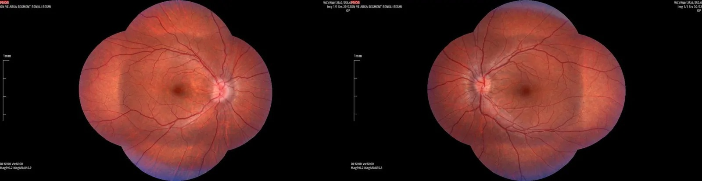
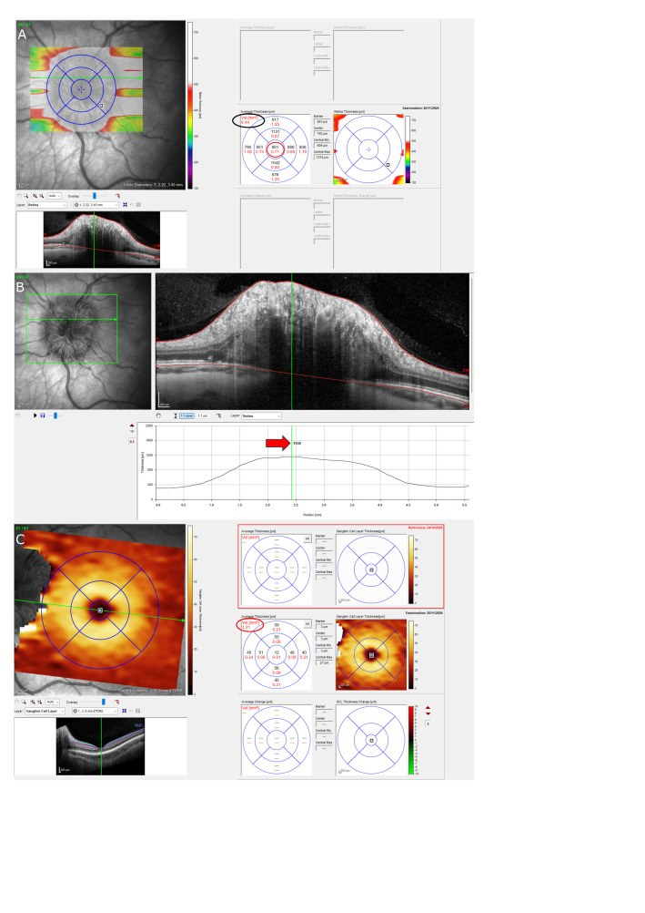
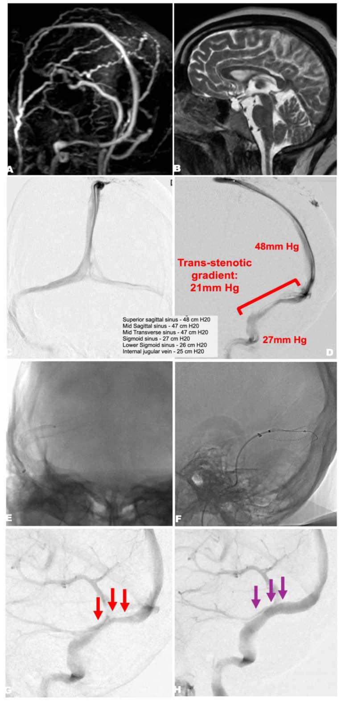
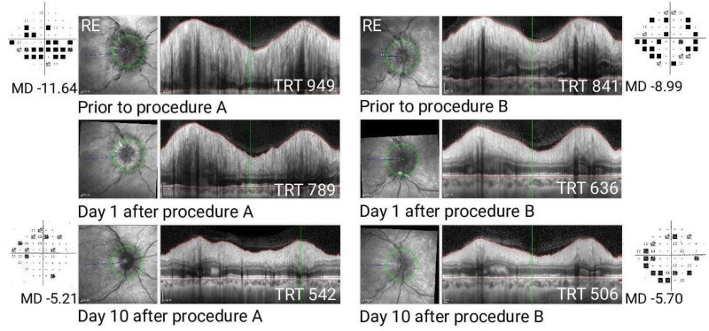
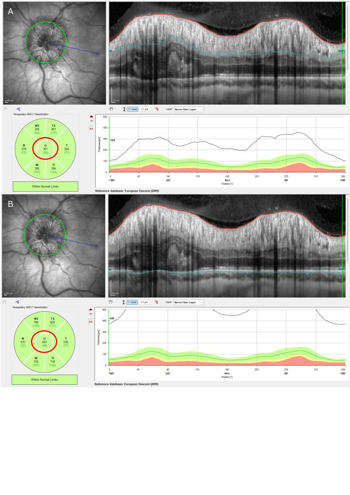

3018 — Tăng áp lực nội sọ tự phát (IIH) ở người lớn: phù gai, OCT, áp lực mở, acetazolamide, stent xoang vs shunt
Tags: pattern:phu-gai-thi pattern:hep-xoang-tinh-mach vung:gai-thi vung:xoang-tinh-mach-doc anatomy:gai-thi score:Frisen protocol:OCT-RNFL protocol:MRV
Mức chắc chắn (certainty): tổng hợp y văn (literature synthesis) — ghép đồng thuận quản lý IIH của Anh (PMC6166610, 2018), tổng quan cơ chế – điều trị 2026 (PMC13524410), tổng quan hệ thống stent xoang trong IIH tối cấp (PMC13174952), protocol thử nghiệm IIH Intervention (PMC13436069), bài quan điểm stent vs shunt (PMC13018796) và nghiên cứu OCT phân biệt phù gai (PMC13692888). Nhiều nguồn, không phải một ca → không gắn nhãn ca nguyên văn.
Bài này trả lời câu hỏi hay gặp nhất ở phòng chụp: “phù gai hai bên này là IIH hay giả phù gai — và có cần can thiệp mạch máu không?” Chốt không nằm ở ảnh MRI đẹp mà ở áp lực mở khi chọc dò tủy sống (opening pressure), chiều dày lớp sợi thần kinh võng mạc (RNFL) trên OCT và tốc độ mất thị trường. Nối 3016 – Hạ áp lực nội sọ tự phát (đối cực), 234 – Theo dõi đa phương thức tăng áp lực nội sọ ở trẻ và 433 – Phù đĩa thị & drusen.
1. Tổng quan bệnh học – cơ chế hình ảnh
- Định nghĩa: tăng áp lực nội sọ (intracranial pressure, ICP) không có nguyên nhân thực thể — không u, không giãn não thất, không huyết khối xoang, dịch não tủy (CSF) bình thường. Tiêu chuẩn Friedman dùng áp lực mở > 25 cm CSF (250 mmH₂O); đo một lần không đủ, phải đặt trong bối cảnh lâm sàng – hình ảnh – thị trường (PMC6166610).
- Dịch tễ: nữ béo trong tuổi sinh sản là nhóm điển hình. Tại Anh, tỉ lệ mắc tăng 108% từ 2,6/100.000 (2002) lên 4,69/100.000 (2016); ở nữ 16–44 tuổi là 7,69/100.000 (PMC13524410). Đồng thuận Anh ghi nhận tỉ lệ hiệu chỉnh tuổi – giới 2,4/100.000 giai đoạn 2002–2014 (PMC6166610) — hai con số khác nhau vì khác cách hiệu chỉnh, không phải mâu thuẫn.
- Sinh lý bệnh (còn tranh luận): hẹp xoang tĩnh mạch màng cứng làm tăng áp lực tĩnh mạch nội sọ → giảm hấp thu CSF qua hạt màng nhện và mạch bạch huyết; béo phì và các yếu tố chuyển hóa (GLP-1, 11β-HSD1) làm nặng thêm. Hẹp xoang gặp ở tới ~90% bệnh nhân IIH (PMC13174952), nhưng có thể là hậu quả của tăng ICP chứ không luôn là nguyên nhân — đây là lý do không được đặt stent chỉ vì thấy hẹp.
- TẠI SAO gai thị phù: bao màng nhện quanh thần kinh thị thông với khoang dưới nhện nội sọ; ICP cao → dịch dồn vào khoang quanh thị → ứ trệ vận chuyển sợi trục (axoplasmic stasis) → phù trục thần kinh và phù gai hai bên. Vì vậy phù gai là dấu hiệu gián tiếp của áp lực, không phải tổn thương tại mắt.
- TẠI SAO OCT đo được phù gai: OCT là giao thoa kế ánh sáng cận hồng ngoại, phân giải trục ~5 µm (Spectralis ~3,9 µm), đo chiều dày giữa màng giới hạn trong (ILM) và màng sắc tố – biểu mô (RPE/BM). Phù = nước ngoại bào + sợi trục căng → RNFL dày lên; tổng chiều dày võng mạc (total retinal thickness, TRT) ở đĩa thị cũng tăng. Khi phù kéo dài, tế bào hạch mất dần → lớp tế bào hạch (GC-IPL) mỏng và RNFL teo — dấu hiệu tổn thương không hồi phục.
- TẠI SAO MRI thấy “giọt nước mắt”: CSF rất sáng trên T2W; ICP cao đẩy CSF vào bao quanh thị → giãn bao thần kinh thị, gai thị lồi vào nhãn cầu, đáy nhãn cầu dẹt, tuyến yên dẹt/treo rỗng (empty sella), xoang ngang hẹp. Các dấu hiệu này không đặc hiệu — phải loại trừ u, huyết khối xoang, giãn não thất.
- TẠI SAO không chụp CT: IIH là bệnh của nữ trẻ; CT sọ không trả lời được câu hỏi mô mềm/xoang và làm tăng liều bức xạ. MRI + MRV là lựa chọn đầu tay (PMC6166610).
- Số liệu định lượng phải nhớ:
- Áp lực mở: > 25 cm CSF = 250 mmH₂O ở người lớn (PMC6166610); ≥ 28 cm CSF ở trẻ không béo, > 25 cm ở trẻ béo (tiêu chuẩn Friedman kinh điển, trích qua PMC6166610/PMC13692888).
- OCT trong IIH: ví dụ của protocol IIH Intervention — RNFL toàn cầu 301 µm (bình thường ~100 µm), TRT 656 µm, thể tích đầu thần kinh thị 8,44 mm³, chiều dày trung tâm đầu thị 901 µm (PMC13436069).
- Sau can thiệp: TRT 949 → 789 → 542 µm (ngày 0 → 1 → 10) và thị trường MD −11,64 → −5,21 dB; mắt còn lại 841 → 636 → 506 µm, MD −8,99 → −5,70 dB (PMC13018796).
- OCT phân biệt phù gai (nhóm nhi): RNFL trung bình 129,85 ± 51,08 µm ở phù gai vs 99,89 ± 11,29 µm ở trẻ khỏe mạnh; RNFL dưới AUC 0,848 cho phù gai; RNFL mũi AUC 0,699 khi phân biệt phù gai với giả phù gai do drusen (PMC13692888). Đây là số của trẻ — không suy ra ngưỡng người lớn.
- IIH tối cấp (fulminant): 2–3% ca IIH, mất thị lực nặng trong 4 tuần; stent xoang trong 48 giờ ở ca được chọn (PMC13174952).
2. Mẫu hình + chẩn đoán phân biệt theo vị trí (gamut)
- Mẫu hình cốt lõi: nữ 20–45 tuổi, BMI > 30, đau đầu kiểu tăng áp lực (nặng hơn khi nằm, sáng sớm), ù tai theo nhịp mạch, nhìn mờ thoáng qua, song thị ngang do liệt dây VI, không sốt, không dấu thần kinh khu trú; soi đáy mắt phù gai hai bên; MRI không có u/giãn não thất; áp lực mở > 25 cm CSF.
- Gamut theo hình ảnh gai thị:
- Phù gai hai bên đối xứng: IIH, huyết khối xoang màng cứng, tăng huyết áp ác tính, bệnh não do thuốc (tetracycline, vitamin A, isotretinoin), thiếu máu, ngưng thở khi ngủ, suy thận.
- Phù gai một bên/không đối xứng: IIH (có thể không đối xứng), u hốc mắt, viêm thần kinh thị, thiếu máu cục bộ thần kinh thị trước (AION), nhiễm trùng.
- Giả phù gai (pseudopapilledema): drusen đĩa thị (optic disc drusen, ODD), PHOMS (peripapillary hyperreflective ovoid mass-like structure), đĩa thị chật — không có phù thật, không mất thị trường kiểu ám điểm.
- Bờ gai mờ + xuất huyết quanh gai: IIH nặng, huyết khối xoang, tăng huyết áp ác tính.
- Gamut “phù gai + bệnh nền”: thiếu máu (Hb thấp), suy thận, suy giáp, tăng canxi, bệnh Lyme, giang mai, sarcoidose, lupus — hỏi và xét nghiệm theo lâm sàng; IIH chỉ được chẩn đoán sau khi loại trừ.
- Phân biệt IIH có/không phù gai: IIH không phù gai (IIHWOP) vẫn có áp lực mở cao và đau đầu, nhưng không có phù gai; cần liệt dây VI hoặc dấu hiệu MRI tăng ICP để hỗ trợ, và không mặc định can thiệp ngoại khoa (PMC6166610).
3. Bảng so sánh phân biệt (ma trận đối chiếu)
| Thực thể (entity) | Hình ảnh điển hình | Chốt vào (rule-in) | Chốt loại (rule-out) | Gợi ý xác nhận |
|---|---|---|---|---|
| IIH | Phù gai hai bên, MRI: bao thị giãn, gai lồi, đáy nhãn cầu dẹt, treo rỗng tuyến yên; hẹp xoang ngang trên MRV | Áp lực mở > 25 cm CSF + MRI/MRV bình thường (không u, không huyết khối) + phù gai | Sốt, dấu thần kinh khu trú, huyết khối xoang, u não → không phải IIH | Chọc dò tủy sống đo áp lực; MRV; OCT RNFL; thị trường 24-2 |
| Huyết khối xoang màng cứng | Phù gai hai bên; khuyết thuốc xoang trên MRV/CTV; nhồi máu tĩnh mạch, xuất huyết | Khuyết lấp đầy xoang + yếu tố nguy cơ (thuốc tránh thai, thai kỳ, đông máu) | Xoang thông hoàn toàn trên MRV có tương phản | MRV/CTV có tương phản; D-dimer; tầm soát tăng đông |
| Giả phù gai do drusen (ODD) | Gai lồi, bờ mờ; B-scan siêu âm: echo dày trong gai; OCT: PHOMS, không có phù trục thật | Echo dày trên B-scan + autofluorescence + không mất thị trường kiểu ám điểm | OCT có phù RNFL thật + bao thị giãn + áp lực mở cao → không phải ODD đơn thuần | B-scan 10–20 MHz; OCT; chụp autofluorescence |
| Viêm thần kinh thị (optic neuritis) | Phù gai một bên, đau khi liếc, giảm thị lực nhanh, RAPD; MRI: ngấm thuốc thần kinh thị | Đau khi vận nhãn + RAPD + ngấm thuốc thần kinh thị | Phù hai bên không đau, thị lực bình thường → ít nghĩ viêm | MRI hốc mắt có tương phản; OCT; kháng thể MOG/NMO nếu nghi |
| Thiếu máu cục bộ thần kinh thị trước (AION) | Phù gai một bên, mất thị trường ngang trên/dưới, đĩa thị nhợt, không đau | Mất thị trường kiểu altitudinal + tuổi > 50 + yếu tố mạch máu | Phù hai bên + thị trường ám điểm trung tâm/co đồng tâm → nghĩ IIH | Soi đáy mắt, thị trường; CRP/ESR nếu nghi arteritis |
| Tăng huyết áp ác tính | Phù gai hai bên + xuất huyết/tơ huyết thanh, hẹp tiểu động mạch | HA ≥ 180/120 mmHg + tổn thương cơ quan đích | HA bình thường nhiều lần → loại trừ | Đo HA; urê/creatinine; soi đáy mắt |
| Bệnh não do thuốc/tăng canxi/thiếu máu | Phù gai hai bên, không hẹp xoang | Dùng tetracycline/vitamin A/isotretinoin, canxi cao, Hb thấp | Không dùng thuốc, xét nghiệm bình thường | Bệnh sử thuốc; canxi, Hb, chức năng thận |

Ảnh đáy mắt màu hai bên của bệnh nhi nữ được chẩn đoán IIH: phù gai Frisén độ 1, bờ gai mờ nhẹ, mạch máu bị che một phần. Đây là mức sớm nhất — dễ bị đọc là “gai bình thường” nếu không so sánh hai bên và không đo OCT. Nguồn: BMC Ophthalmol 2026 (PMC13692888), Fig. 1, CC BY 4.0.4. Protocol chụp + hệ phân độ/điểm chuẩn hóa
Trình tự chẩn đoán (không nhảy bước):
- Soi đáy mắt giãn đồng tử + chụp ảnh màu: xác nhận phù gai, ghi Frisén 0–5, tìm xuất huyết, tơ huyết thanh, teo gai.
- Thị lực, đồng tử (RAPD), thị trường tự động 24-2 hoặc 30-2: ghi MD (mean deviation) và PSD; thị trường là thước đo chức năng, OCT là thước đo cấu trúc.
- OCT đĩa thị: vòng quét chuẩn quanh gai (đường kính 3,45 mm, 768 A-scan), đo RNFL toàn cầu + 4 góc, TRT, thể tích đầu thần kinh thị; chụp GC-IPL vùng hoàng điểm để phát hiện mất tế bào hạch sớm. Chụp lại cùng máy, cùng thuật toán để so sánh.
- MRI sọ + MRV (TOF và/hoặc có tương phản): loại trừ u, giãn não thất, huyết khối xoang; tìm dấu hiệu tăng ICP (bao thị giãn, gai lồi, đáy nhãn cầu dẹt, treo rỗng tuyến yên, hẹp xoang ngang).
- Chọc dò tủy sống: đo áp lực mở bằng thước nước (cm CSF), bệnh nhân nằm nghiêng, chân duỗi, thư giãn, tránh Valsalva; lấy CSF làm tế bào, protein, glucose, vi sinh; không đo khi đã có phù gai nặng mà chưa loại trừ u/giãn não thất.
- Tầm soát nguyên nhân thứ phát: thuốc, thiếu máu, suy thận, cường cận giáp, ngưng thở khi ngủ, bệnh mô liên kết; thử thai trước khi kê acetazolamide.

Hai số đo OCT của cùng đầu thần kinh thị trong phù gai: thể tích đầu thị 8,44 mm³ (khoanh đen) và chiều dày trung tâm 901 µm (khoanh đỏ). Đây là các tham số bổ sung cho RNFL, giúp theo dõi phù gai khi RNFL đã bị ảnh hưởng bởi teo hoặc khi đĩa thị dị dạng. Nguồn: BMJ Open 2026;16:e111013 (PMC13436069), Fig. 3, CC BY 4.0.
Phân độ Frisén (0–5): 0 = gai bình thường; 1 = bờ mờ, quầng quanh gai; 2 = mờ rõ + mạch máu bị che một phần; 3 = mạch máu bị che nhiều, xuất huyết; 4 = gai lồi rõ, mạch máu khó thấy; 5 = gai lồi rất mạnh, mạch máu gần như không thấy. Frisén ≥ 3 là ngưỡng được dùng trong protocol IIH Intervention để xác định nguy cơ mất thị lực (PMC13436069).
Điều trị theo bậc:
- Giảm cân là điều trị duy nhất thay đổi bệnh nền: tăng 5–15% cân trong năm trước chẩn đoán; cần giảm tới ~15% để lui bệnh (PMC6166610). Phẫu thuật giảm béo có dữ liệu ủng hộ ở BMI cao.
- Acetazolamide: khởi đầu 250–500 mg × 2/ngày, tăng dần; liều tối đa 4 g/ngày (IIHTT: 44% đạt 4 g/ngày, đa số dung nạp 1 g/ngày); 48% ngừng ở liều trung bình 1,5 g vì tác dụng phụ (dị cảm, rối vị giác, mệt, tiêu chảy, sỏi thận, toan chuyển hóa) (PMC6166610).
- Đe dọa thị lực cấp: dẫn lưu CSF tạm thời (lumbar drain) để câu giờ, rồi can thiệp dứt điểm: shunt CSF (VP được ưu tiên hơn LP vì ít phải sửa van hơn), mở cửa sổ bao thần kinh thị (ONSF), hoặc stent xoang tĩnh mạch nếu có hẹp + chênh áp.
- Stent xoang: đặt stent tự bung 8–10 mm qua chỗ hẹp xoang ngang–sigma; không có ngưỡng chênh áp được chấp nhận phổ quát — protocol IIH Intervention không đặt ngưỡng gradient vì áp lực thay đổi theo gây mê (PMC13436069). Ca minh họa có gradient 21 mmHg (48 → 27 mmHg) (PMC13174952). Sau stent cần kháng kết tập tiểu cầu/kháng đông > 6 tháng; hẹp trong stent cần can thiệp lại ở ~1/3 ca (PMC6166610).
- ONSF: kiểm soát phù gai nhanh nhưng không giảm đau đầu toàn thể; biến chứng tới ~40% (bao gồm đóng lại lỗ mở, hiếm khi tắc động mạch trung tâm võng mạc) (PMC13174952).
- IIH tối cấp: 2–3% ca, mất thị lực trong 4 tuần; stent xoang tối cấp trong 48 giờ ở ca được chọn — 23 bệnh nhân/7 nghiên cứu, ≥ 75% cải thiện phù gai và thị lực, đau đầu cải thiện 56–100%, không tử vong do thủ thuật (PMC13174952).
Sơ đồ quyết định:
flowchart TD
A[Nghi IIH: đau đầu, ù tai mạch,<br/>nhìn mờ thoáng qua, nữ béo] --> B[Soi đáy mắt + OCT + thị trường]
B --> C{Phù gai?}
C -->|Không| D{Liệt dây VI hoặc<br/>dấu MRI tăng ICP?}
D -->|Không| E[Tìm nguyên nhân đau đầu khác]
D -->|Có| F[MRI + MRV + chọc dò]
C -->|Có| F
F --> G{Áp lực mở > 25 cm CSF<br/>và MRI/MRV không u,<br/>không huyết khối?}
G -->|Không| H[Điều trị theo nguyên nhân]
G -->|Có| I[IIH xác định]
I --> J{Thị lực giảm nhanh<br/>trong 4 tuần?}
J -->|Có| K[IIH tối cấp: dẫn lưu tạm<br/>+ shunt/ONSF/stent trong 48 giờ]
J -->|Không| L[Giảm cân + acetazolamide<br/>+ theo dõi OCT/thị trường]
L --> M{Thị lực xấu đi<br/>dù điều trị?}
M -->|Có| K
M -->|Không| N[Theo dõi 1-3 tháng/lần]
5. Biến thể bình thường và cạm bẫy
- Drusen đĩa thị (ODD) là cạm bẫy số 1. Gai lồi, bờ mờ nhưng không phải phù thật; B-scan thấy echo dày, OCT thấy PHOMS và không có phù trục; bệnh nhân không mất thị trường kiểu ám điểm. Đặt stent hay shunt cho ODD là can thiệp oan. Ngược lại, ODD có thể kèm IIH thật — phải đo áp lực mở khi lâm sàng nghi.
- OCT không thay thế thị trường. RNFL dày do phù có thể giảm sau điều trị nhưng thị lực đã mất không hồi phục; ngược lại RNFL mỏng ở giai đoạn teo là dấu hiệu tổn thương mạn. Luôn đọc cả RNFL, TRT, GC-IPL và MD.
- Hẹp xoang ngang không đồng nghĩa cần stent. Hẹp gặp ở ~90% IIH và có thể mất sau khi hạ áp lực (chọc dò/điều trị nội khoa). Chỉ can thiệp khi có hẹp thực sự + chênh áp + thất bại điều trị, và hiểu rằng ngưỡng chênh áp chưa được chuẩn hóa.
- Áp lực mở là một con số, không phải chân lý. Đo sai tư thế, căng thẳng, Valsalva, béo bụng làm sai lệch; áp lực bình thường không loại trừ IIH nếu lâm sàng – hình ảnh điển hình và ngược lại. Đo lại khi nghi ngờ, đừng chẩn đoán chỉ dựa vào một lần.
- Đừng bỏ qua liệt dây VI. Song thị ngang là dấu hiệu tăng ICP có giá trị, đặc biệt ở IIH không phù gai; khám vận nhãn đầy đủ trước khi kết luận “không có dấu thần kinh”.
- Bệnh nhân đã đặt shunt bị đau đầu: không tự động sửa shunt. Đồng thuận Anh khuyến cáo không sửa shunt thường quy nếu không có phù gai/nguy cơ mất thị lực; đau đầu có thể do quá dẫn lưu, hội chứng đau đầu mạn, hoặc đau đầu do thuốc (PMC6166610).
- Corticosteroid không phải điều trị chuẩn. Đồng thuận không khuyến cáo corticosteroid cho IIH tối cấp vì thiếu bằng chứng và tác hại (tăng cân, loãng xương, loạn thần); ưu tiên giảm áp lực cơ học (shunt/ONSF/stent).
- Thai kỳ: IIH có thể nặng lên; acetazolamide cần cân nhắc nguy cơ thai, chọc dò và can thiệp vẫn thực hiện được khi cần; phối hợp sản – thần kinh – nhãn khoa (PMC6166610).
6. Tự lượng giá — Blind Quiz
Ca 1 — Nữ 36 tuổi, béo phì, mất thị lực tiến triển 2 tháng, nặng lên rõ trong 2 tuần. Thị lực 20/200 mắt trái, mắt phải chỉ còn đếm ngón tay. Chọc dò: áp lực mở 46 cm H₂O.

- Gợi ý: phù gai hai bên rất nặng (Frisén 4 mắt trái, 4+ mắt phải); không sốt, không liệt chi; MRI không có u.
- Câu hỏi: Hẹp ở đâu? Chênh áp bao nhiêu? Đây là thể IIH nào và cần làm gì trong 48 giờ?
Bấm để hiện đáp án (findings + chẩn đoán)
- Dấu hiệu: (A) MRA thì động mạch – tĩnh mạch: hẹp khu trú xoang ngang phải; (B) T2 cạnh dọc: não “sụp” nhẹ, não thất không giãn, phù hợp tăng ICP; (C, D) chụp xoang: hẹp xoang ngang – sigma phải với gradient 21 mmHg (48 → 27 mmHg); (E, F) đặt stent tự bung qua chỗ hẹp; (G, H) trước/sau stent, dòng chảy qua xoang được mở rộng.
- Chẩn đoán: IIH tối cấp (fulminant IIH) — mất thị lực nhanh trong 4 tuần, phù gai nặng, hẹp xoang ngang có chênh áp.
- Xử trí: giảm áp lực ngay — dẫn lưu CSF tạm thời (lumbar drain) để bảo vệ thị lực trong lúc chuẩn bị; stent xoang tối cấp (trong 48 giờ) là lựa chọn hợp lý khi có hẹp + chênh áp; nếu không có điều kiện stent → shunt CSF hoặc ONSF. Không dùng corticosteroid đơn thuần.
- Bài học: đây là cấp cứu nhãn khoa thần kinh; chậm vài ngày có thể mất thị lực vĩnh viễn.
- Nguồn ảnh: Front Neurol 2026;17:1824887 (PMC13174952), Fig. 2, CC BY 4.0.
Ca 2 — Bệnh nhi nữ, đau đầu tái diễn và nhìn mờ thoáng qua. Soi đáy mắt hai bên như hình.
- Gợi ý: không sốt, không đau khi liếc mắt; thị lực còn tốt; không dùng thuốc.
- Câu hỏi: Mô tả gai thị và xếp độ Frisén? Cần làm gì tiếp theo để phân biệt phù gai thật với giả phù gai?
Bấm để hiện đáp án (findings + chẩn đoán)
- Dấu hiệu: gai thị hai bên hồng, bờ mờ nhẹ, quầng quanh gai, mạch máu bị che lấp một phần — Frisén độ 1.
- Chẩn đoán: phù gai sớm hai bên, phù hợp IIH nhưng chưa đủ để chẩn đoán.
- Bước tiếp: OCT đĩa thị (RNFL/TRT/PHOMS) + B-scan siêu âm tìm drusen + MRI/MRV + chọc dò đo áp lực mở. Nếu OCT có phù thật, bao thị giãn và áp lực mở > 25 cm CSF → IIH.
- Cạm bẫy: Frisén 1 rất dễ bị đọc là “gai bình thường”; so sánh hai bên + OCT giúp phát hiện.
- Nguồn ảnh: BMC Ophthalmol 2026 (PMC13692888), Fig. 1, CC BY 4.0.
Ca 3 — Bệnh nhân IIH được can thiệp giảm áp. Trước can thiệp RNFL/TRT rất dày; sau 10 ngày như hình.

- Gợi ý: bệnh nhân được can thiệp vì phù gai đe dọa thị lực; hình trên là mắt phải, dưới là ngày 1 và ngày 10.
- Câu hỏi: TRT thay đổi bao nhiêu? MD cải thiện bao nhiêu? Vì sao OCT lại quan trọng hơn “nhìn gai bằng mắt”?
Bấm để hiện đáp án (findings + chẩn đoán)
- Dấu hiệu: TRT 949 → 789 → 542 µm (trước → ngày 1 → ngày 10); thị trường MD −11,64 → −5,21 dB. Mắt còn lại: 841 → 636 → 506 µm, MD −8,99 → −5,70 dB.
- Chẩn đoán: phù gai do IIH đáp ứng nhanh sau giảm áp lực — cả cấu trúc (OCT) và chức năng (thị trường) đều cải thiện.
- Vì sao OCT quan trọng: đo định lượng mức phù (µm) và phát hiện teo sợi thần kinh sớm; mắt người chỉ thấy thay đổi khi đã rõ. Dùng cùng máy/thuật toán để so sánh.
- Nguồn ảnh: Pract Neurol 2026;26:142–145 (PMC13018796), Fig. 1, CC BY 4.0.
Ca 4 — Kỹ thuật viên đo OCT đĩa thị ở bệnh nhân nghi IIH.

- Gợi ý: đây là ảnh minh họa trong protocol nghiên cứu, không phải ca bệnh cụ thể.
- Câu hỏi: Con số RNFL toàn cầu 301 µm và TRT 656 µm nói gì? Ngưỡng bình thường của RNFL quanh gai ở người lớn vào khoảng bao nhiêu?
Bấm để hiện đáp án (findings + chẩn đoán)
- Dấu hiệu: RNFL toàn cầu 301 µm (A) và TRT 656 µm (B) — dày gấp ~3 lần giá trị bình thường.
- Chẩn đoán: phù gai nặng trên OCT; cần tương quan lâm sàng và áp lực mở.
- Ngưỡng tham khảo: giá trị RNFL bình thường phụ thuộc máy, tuổi, dân số và đường kính đĩa thị — repo không đưa một ngưỡng người lớn duy nhất vì chưa đối chiếu được bảng chuẩn của máy; nghiên cứu nhi trong bài dùng 99,89 ± 11,29 µm ở trẻ khỏe mạnh (PMC13692888). Vì vậy hãy so với bảng chuẩn của đúng máy và theo dõi xu hướng; số 301 µm là ví dụ của protocol, không phải ngưỡng chẩn đoán.
- Lưu ý: đây là ảnh minh họa kỹ thuật; không dùng để chẩn đoán độc lập.
- Nguồn ảnh: BMJ Open 2026;16:e111013 (PMC13436069), Fig. 2, CC BY 4.0.
Bài liên quan chéo
- 3016 – Hạ áp lực nội sọ tự phát (SIH) — đối cực: đau đầu thế đứng, không phù gai
- 234 – Theo dõi đa phương thức tăng áp lực nội sọ ở trẻ — khác ngưỡng áp lực và nguyên nhân
- 433 – Phù đĩa thị & drusen đĩa thị — giả phù gai, cạm bẫy số 1 của IIH
- 432 – Vùng yên & tổn thương quanh yên — loại trừ u vùng yên trước khi chẩn đoán IIH
- 200 – Tổng quan hệ Thần kinh
Ảnh
- Tên file:
3018_*.jpg; nguồn + giấy phép từng ảnh trongimages/CREDITS.md; link gốc trongsources.md. - Cả 5 ảnh đều CC BY 4.0 — dùng và trích dẫn được, giữ nguyên ảnh gốc (không crop/kéo giãn).
- Ảnh minh họa kỹ thuật (Ca 4) lấy từ protocol nghiên cứu, không phải ca bệnh — đã ghi rõ trong quiz.
Không dùng để chẩn đoán độc lập khi chưa có người hướng dẫn.